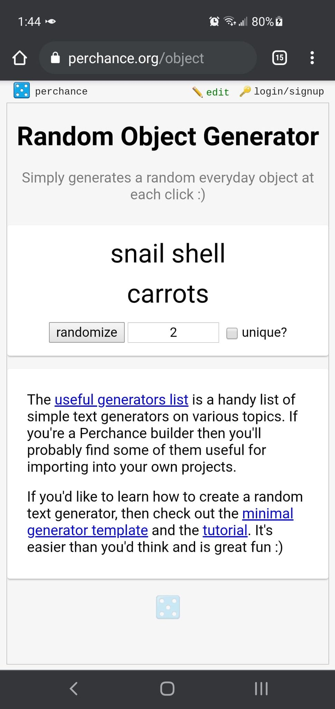
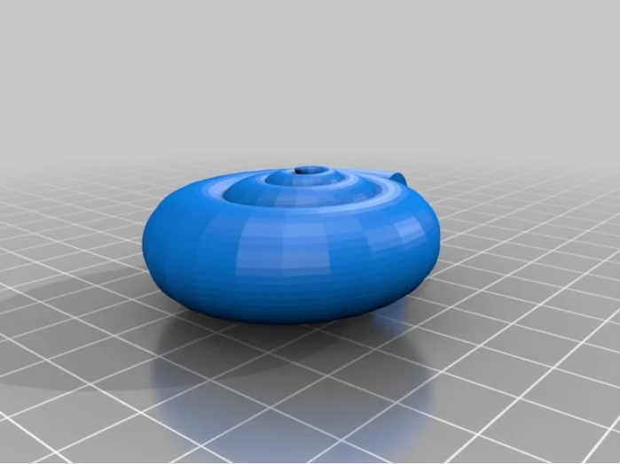
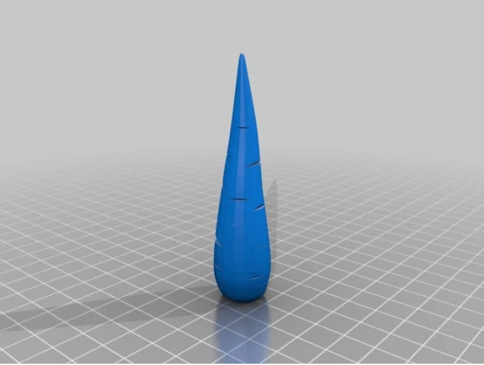
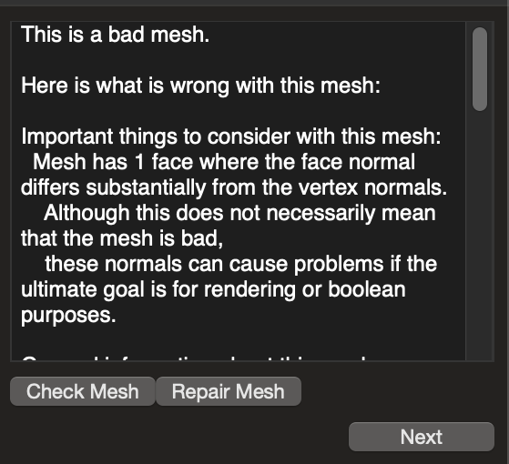
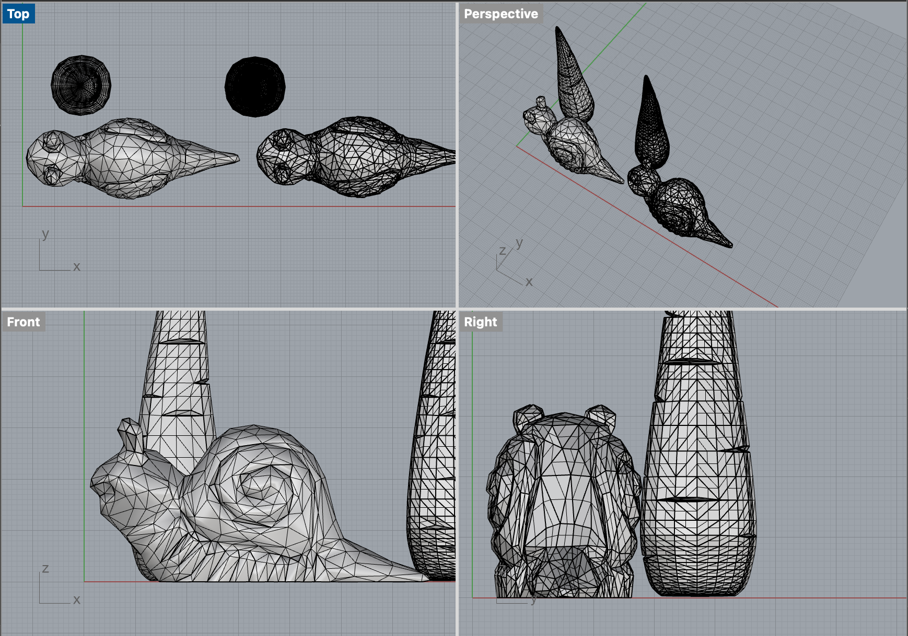

A4: Getting Meshy! and Lamps!
For Part 1, I modified two STLs into a printable STL for the assignment.
As a start, I needed to select two STLs, but had trouble choosing which objects to go with. I decided to use a random generator!

Alright, snail shell and carrots it is! I went on Thingiverse to look for an STL of a snail shell and carrot.

Credit to: Alajaz and wojtekgr
I loaded the two STL files into Rhino. I "scale" both STLs down to ~1 inch and "reducemesh" the snail shell from 7,000 to 1,000 polygons. The carrot was already 1,000 polygons, so I didn't "reducemesh."
Both were closed meshes. The next step was to check the meshes using "MeshRepair." The carrot mesh was good, but the snail shell mesh was bad.
It was unclear why. I repaired the mesh, but it was still throwing me an error?

I proceeded despite the error. Next, I used "meshtoNURB" to change from mesh to NURB.
It was a success (and didn't take too long unlike what happened in class). I had two closed meshes and two closed polysurfaces!

Finally, I "booleanunion" the two polysurfaces to create this carrot-snailshell STL. Oh! And since I like making small objects, I "scale" it down yet again.
Despite the success, I still felt it was lacking because I never really resolved the error with the meshes...
Oh well! It ended up looking like a snail with a unicorn horn though, hehe

The carrot-snailshell STL file is below:
CarrotSnailShellSTL